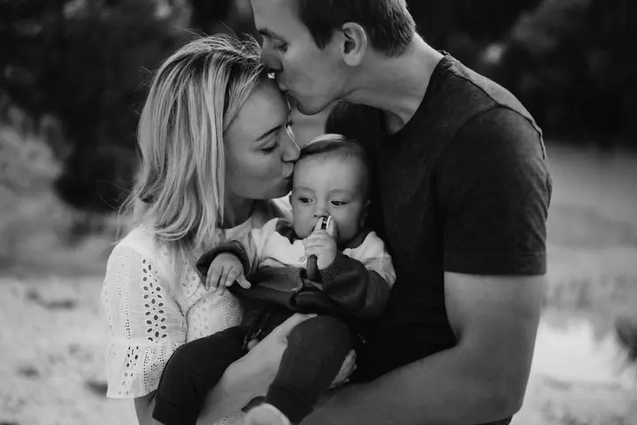
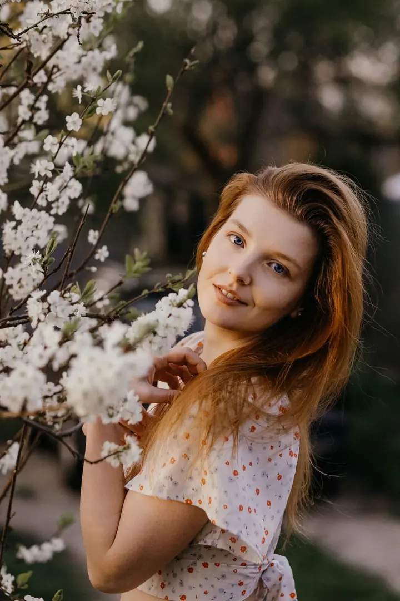

Rodinné focení
Hodinka venku v přírodě, u vás doma nebo v ateliéru, kde budete spolu chodit, tulit se, běhat s dětmi po louce a hrát si. Děti tu udávají tempo, nic nebudou dělat nasilu a fotky budou přirozené.

Jmenuji se Maru Adamcová a pod značkou Kousky duší fotím rodiny, páry a portréty. Nejradši vás vezmu ven do přírody, ideálně na kopec hodinku před západem slunce, a nech…
Rezervovat termínJsem tichá voda, co břehy nemele. Introvert, idealista a snílek. Původem jsem z Beskyd, dnes žiju v Brně a pendluji mezi Brnem, Vysočinou a rodnými horami. Za focením ale za vámi dojedu kamkoliv.


Doma mám Honzu, syna Jonyho a tři zvířecí parťáky Fíbí, Yokiho a Bowieho. Dva roky s vlastním capartem mi jasně ukázaly, jak rychle ten náš společný čas letí. A taky to, že na fotkách v telefonu většinou někdo chybí, nejčastěji máma.
Proto se při focení snažím vytvořit prostor, kde můžete být sami sebou. Stres, strnulé pózy a umělé americké úsměvy klidně nechte doma. Nejvíc mě těší, když se na fotce podaří zachytit opravdovou chvíli nebo emoci, prostě kousek vaší duše.
Co fotím
Hodinka venku v přírodě, u vás doma nebo v ateliéru, kde budete spolu chodit, tulit se, běhat s dětmi po louce a hrát si. Děti tu udávají tempo, nic nebudou dělat nasilu a fotky budou přirozené.
Procházka v přírodě, nejradši hodinku před západem slunce, kdy můžete být sami sebou a hlavně spolu. Do toho, co se děje, zasahuji co nejmíň, a když nebudete vědět, co dělat, jemně vás navedu.
Klidné a přirozené portréty venku mezi rozkvetlými stromy nebo v mém minimalistickém ateliéru v Rosicích u Brna. Bez strnulých póz a umělých úsměvů.
Těhotenské bříško je nejlepší fotit mezi 28. a 34. týdnem, kdy už je hezky vidět a zároveň je ještě vidět i maminka. Čerstvě narozená miminka ráda fotím u vás doma, v jejich nejpřirozenějším prostředí.
Fotografie jsou ilustrační
Postup
Pošlete mi poptávkový formulář a společně domluvíme termín, čas a místo focení. Po zaplacení rezervačního poplatku máte termín jistý.
V klientském portálu najdete Průvodce focením s tipy na oblečení a lokality a krátký dotazník, abych focení mohla přizpůsobit vám. S outfity ráda pomůžu, můžete si vybrat i z mého klientského šatníku.
Potkáme se v domluvený čas na vybraném místě a zhruba hodinku si budeme spolu užívat. Jemně vás provedu, vaším úkolem je jen se uvolnit a být spolu.
Do týdne vám pošlu galerii s 80 až 100 náhledy a vy si z nich vyberete své oblíbené. Hotové fotky máte do 2 týdnů od výběru a platby, tištěné fotky v dárkovém balení dorazí do 8 týdnů.
Otázky
Ideálně aspoň dva měsíce dopředu, ať máte jistotu, že budu mít volno. Můžete to ale zkusit i na poslední chvíli, třeba to vyjde. Těhotenské focení je nejlepší naplánovat mezi 28. a 34. týden.
V Brně i v Beskydech mám několik osvědčených lokalit, ale můžeme vyrazit i na vaše oblíbené místo. Můžu přijet k vám domů, což se hodí hlavně pro newborn a v zimě, nebo můžeme fotit v mém ateliéru v Rosicích u Brna.
Jednoduché slušivé střihy, přírodní materiály a neutrální nebo zemité barvy, aby oblečení nestrhávalo pozornost a vynikli jste vy. Víc tipů najdete v Průvodci focením a s výběrem vám ráda pomůžu i po telefonu.
Předpověď počasí bedlivě sleduji, a když bude hrozit déšť, domluvíme náhradní termín. Stejně to uděláme, když na vás nebo na mě zaútočí bacil, jen mi dejte vědět co nejdřív.
Mám tři balíčky, MINI za 3900 Kč, STŘEDNÍ za 4900 Kč a MAXI za 5900 Kč, které se liší počtem vybraných a vytištěných fotek. Všechny zahrnují zhruba hodinku focení, pomoc se stylingem, cestovné v Brně a okolí i v Beskydech a tištěné fotky v dárkovém balení.